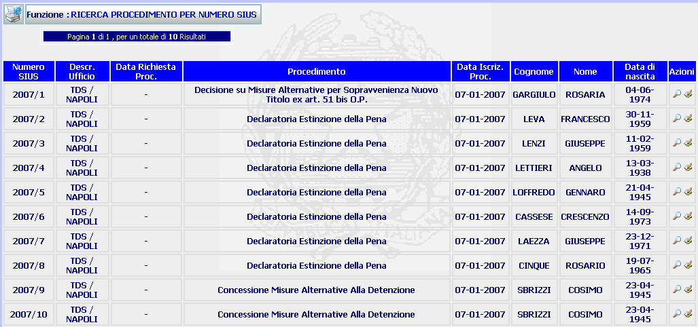

ESITO RICERCA AVANZATA PROCEDIMENTO PER NUMERO SIUS: La funzione consente di visualizzare il dettaglio del procedimento sius emerso a seguito di una ricerca avanzata per numero sius e di effettuare modifiche dello stesso.
LE MASCHERE VIDEO
La funzione viene realizzata attraverso la maschera seguente in cui compare l'elenco dei procedimenti di sorveglianza individuati

COME FARE PER ...
| Per visualizzare i dati del procedimento SIUS l'utente deve: |
Cliccare sul pulsante
; si aprirà la maschera di dettaglio del procedimento Sius che permette di visualizzare i dati del procedimento sius corrispondente.
| Per modificare i dati del procedimento corrispondente l'utente deve: |
Cliccare sul pulsante
in corrispondenza del procedimento che si vuole modificare; si aprirà la maschera Modifica procedimento che permette di effettuare le modifiche volute.
| Per visualizzare, se presente, un'altra
pagina occorre:
|

CAMPI
La presente funzione non prevede campi da compilare
PULSANTI
Oltre ai pulsanti
 e
,
che fanno parte del gruppo di
pulsanti di "Uso Comune"
è presente il seguente pulsante:
e
,
che fanno parte del gruppo di
pulsanti di "Uso Comune"
è presente il seguente pulsante:
|
PULSANTE |
DESCRIZIONE |
|
|
Questo pulsante ha lo scopo di visualizzare i dati di dettaglio del procedimento Sius. |
BOTTONI
Oltre ai comandi funzionali relativi al menù verticale non sono presenti altri bottoni